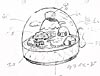
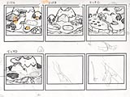
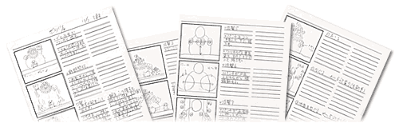
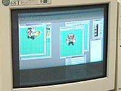

| ゲームボーイができるまで（ソフト開発編）インデックスへ |
| どのようなゲームにするか、ジャンルや世界観を決めたり、システムや大まかなマップ、コースを考える | ||
| ゲームボーイができるまで（ソフト開発編）インデックスへ |
| どのようなゲームにするか、ジャンルや世界観を決めたり、システムや大まかなマップ、コースを考える | ||
| 細川 | まず、企画はディレクターである私と、周囲の数人で考えます。ゼロから企画を作ることもありますが、今回は『ワリオ』シリーズということで、前作とどう違いを出すか、新しいアイデアをどう入れるか、などをみんなで考えました。キャラクターのアクションや効果など基本のシステムを考えたら、次はストーリーを決めます。ボスを倒すまでの道のりやゲームの大まかな流れがここで決まります。 | |
| ▲トップへ | ||
| キャラクターや世界観のデザインを決定 | ||
| 細川 | 企画と平行して、キャラクターのデザイン、背景のデザインなどを考えていきます。通常のゲーム機ならペンで書いたイラスト原画をまず用意するのですが、ゲームボーイの場合はドットにも制限がありますので、かなり大ざっぱなラフを書くことになります。それをもとに敵キャラクターの造形などを決めていきます。 | |
| 清武 | 今回、私が考えた大ボスはピエロです。こういった鉛筆で書いたラフをディレクターに見せてＯＫをもらうわけです。 | |
| 佐野 | まずはキャラクターのラフスケッチをまとめて何十枚も書いて、使えそうなキャラをどんどん提出していきます。自分ではおもしろいと思っていても作品の世界観に合わなくてボツになったり、逆になにげなく書いたものが好評だったりもしますね。 | |
| 細川 | キャラクターはこのようにスケッチを書きますが、背景の場合は私が簡単な指示書を作って、あとはグラフィック担当のスタッフに自由に書いてもらうことが多いですね。ゲーム上の仕掛け、例えば、「アイテムを拾う」「穴に落ちる」といったアクションは、背景を書くスタッフと私がそれぞれに考えて、最終的にディレクターである私が採用・不採用を決定します。 |
|  | |||
| デザインのラフをざっと書いて、世界観を作り上げていく。キャラクターのラフも１００枚近くあったけれど、採用されたのはそのうちのたった半分なんだって。厳しい！ |
|||
|
|||
| このラフスケッチがゲーム上ではこんなキャラクターになるのだ。 | |||
| ▲トップへ |
| キャラクターや背景をドット画に起こし、アニメーションを作成 | ||
| 清武 | 先ほどのラフをドット画に起こしていきます。いざドットに起こすと、ラフのイメージ通りにいかない場合も多いので、手や顔などをバラバラに書いて、それを組み合わせてなんとか思うとおりのグラフィックにします。 | |
| 佐野 | キャラクターに動きがつく場合は、アニメーションのパターンをひとつひとつドット画で書いていきます。気に入らないときは、何度も何度も書き直します。 | |
|  パソコンは普通のウィンドウズマシンだけど、使っているのは開発用のグラフィックツール。ここで作ったデータはゲームボーイ上でしか再生できない。佐野さんはマウスを鉛筆みたいにして、スイスイ書いていたぞ。カッコいい〜。 |
||
| ▲トップへ | ||
| ゲームボーイができるまで（ソフト開発編）インデックスへ |